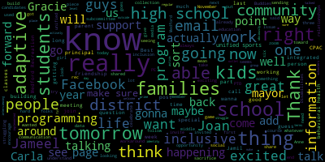

[Carla Andre]: Sorry, that, you know, it's really going to be based on the students need very individualized. So, um, Tanya, I don't know if you would like me to answer questions about adaptive phys ed first and then move on to unified sports.
[Tanya Sullivan]: Yeah. Um, Jimmy, I know you have your hand up. Is it about adaptive or unified?
[Jameel Webb-Davis]: It's about adaptive, I think. I'm not sure I understand what unified sports is yet. That's what she's going to talk about next, right? I don't know why this keeps playing. So are you noticing that this is... for the ref, you said you're getting referrals, like you have 70, 75 referrals, is that referred from the physical, from the PE teachers referring or the teachers referring the students or parents are asking for this?
[Carla Andre]: No, this is only so far from teachers. So PE teachers, classroom teachers.
[Jameel Webb-Davis]: And what are the age ranges that typically these kids are being referred at? Majority is elementary level. Okay. I'm just asking because I'm, you know, this would have been huge for my son he's 17 now he's a senior, but this would have been huge for him when he was younger he was diagnosed with autism, and one of the biggest problems he had was. being able to work in any kind of team or group setting, following the instructions, you know, having a group of kids go do something that's completely difficult for him. Now, as he's gotten a little bit older, it's gotten a little bit better, but by this age, he's like, no sports for me. I'm out. I don't want to have anything to do with sports. And I feel like because he didn't have the base of a positive PE experience when he was younger now it's like nope, I'm not going to do anything like that. And so I'm wondering, now, is this something that it. a child would, you guys would recognize when going through the process of diagnosing kids and evaluating them, where you say, hey, no, this kid also needs help in PE, and he's going to get that support as well, and they'll put it in the IEP. Is this an automatic thing, or are we just educating the parents so that Medford can decide? Maybe that's a question for Joan, Medford to decide if we're going to start doing this.
[Joan Bowen]: So we are doing this what's happening is once we do the referral and Carla conducts her assessment. That we look at the specific goals and objectives that the student would require for the AP and what the model will look like what the service delivery will look like so it's going to be individualized and our hope is to expand it. and have more physical education teachers trained in this, so that all schools have a PE people, but Carla is really driving so this is like our pilot year so we're very excited to have it in our school system, but there is an evaluation process, there will be discussions with the parents saying, you know, we. We feel your child may be appropriate for an assessment, so we're going to conduct an assessment and then come up with the goals and objectives to address that.
[Jameel Webb-Davis]: Can a parent initiate this or is it from the teacher PE side?
[Joan Bowen]: I think it could be either. I mean, if the parent has concerns, I mean, like just any evaluation, if a parent has concerns, we want to look at those and address them and assess them to see where we go. So I think we would welcome parent referrals, but right now we're leaning towards the physical education teachers because they see the students firsthand and the teachers see them firsthand and maybe the struggles that they're seeing in the phys ed physical education class either. frustration or like in the video, they don't understand the directions, they're having difficulty following along or they find motor skills, you know, and what sort of adaptive equipment they would need. So that's where we're at right now is just getting all this information together, which will really help us in the coming years of where, you know, what direction we're going in, but we would welcome referrals and we would observe the student and then decide if an evaluation was appropriate.
[Tanya Sullivan]: Sharon, I know you had your hand up. Do you want to ask your question?
[Sharon Romeo]: I do. Thank you. So my daughter is in second grade. And when she was in kindergarten, I specifically asked about adaptive PE at her IEP meeting and was told we didn't have it and that the PT would be accompanying her to PE class. I love our PT. I've been nothing but happy with her. But I joined the meeting. And I apologize that I joined late. But I joined right as you were saying, Carla, that a PT is not a substitute for an adaptive PE teacher. So my daughter is up for her reaval right now. I have to sign the paper saying we're agreed to the evaluations. Is this something we can ask for since she is in a three-year reaval in second grade?
[Carla Andre]: Right. And I'm just to clarify that to the PT absolutely can be in the, in the gym, if the physical therapy is going to help the student access the curriculum, so that that can happen. What I just mean by that is the PT wouldn't be teaching the curriculum. So if your student were to require a more specialized instruction of the curriculum, then that would be where the APE comes in. But absolutely, the PT can still accompany the student to general ed, to their PE class, if it's helping your child's access.
[Sharon Romeo]: I get the sense she's like assisting her in class. I mean, that's my sense.
[Carla Andre]: Yeah, and that could be, you know, they could be doing certain exercises that are helping her, you know, participate in the general ed PE class. And like, like we said, that we're always going to look at the least restrictive environment. And, you know, the hope is that the student can remain in a general PE class with those accommodations. And the accommodation could include, you know, PT service at that time, if that's what, you know, and maybe I don't know if Denise, you want to speak on that, but, you know, my, My theory is that a PT is needed for a student to access certain curriculum and if that's why the related services there. So that's the difference is that the PT helps access the AP is the curriculum. If that.
[Sharon Romeo]: Okay, that does that does that helps. Thank you.
[Joan Bowen]: And in regards to the three year evaluation. I mean, This would be a good time to conduct the assessment for APE because we're doing all the assessment at once. So, you know, we have said to the, we've spoken to the evaluation team leaders, Carla did a presentation to all the, I meet with the ETLs every week. She did the same presentation and we said, you know, She's going to be reaching out to do, you know, as they, as these students come to her attention and she does the observations, but if there is a three year reevaluation coming up and you feel that a student would require it, then we would we would want to add that assessment to the consent form. I'd reach out to your ETL. You can see me on the email, and if they have any questions, I can explain it further to them. But I think during the three-year evaluation process, it's a good time to conduct that assessment as well.
[Unidentified]: OK.
[Denise DesJardins]: I think my question for Carla, Alex, I'm sorry, or as the other PT in Medford, is where does the APE teacher's role fall in educating the general education PE teachers? I think that's a huge, huge area that both PTs that have been in Medford, myself, I've been here for a longer period than Nicole, but we have worked very hard on working with the general education teachers to understand a child's physical or social, emotional or cognitive issues. I mean, I think that Joan would agree that is part of our role, either OT or PT. It's part of our role to sort of work with the general education. But where, as an adaptive PE teacher, I guess, where do you see the role of adaptive PE? Do you see that taking over for us? I mean, not that I'm not going to say we'd love to give it to you, but do you, I mean, envisioning moving forward that you will be the one educating the PE teachers.
[Carla Andre]: I mean in terms of, you know, providing PE teachers with accommodations and best practice and the best way to modify curriculum. Yeah, I would provide that for PE teachers, but in terms of. You know, like I said before, it doesn't, it's not going to replace the service, so it wouldn't replace PT if PT was.
[Denise DesJardins]: No, I'm not asking you to replace PT. I understand. No, I understand the difference, I hope, between APE and PT, but I guess my concern is more where the least restrictive environment is what we're all hoping for. that I do think that there's an opportunity with some teaching that may or may not have fallen under the realm of various related service providers or various special education people, but now having an adaptive PE person in the district.
[Tanya Sullivan]: Will you have a staff, I guess, is what it sounds like Denise is asking to me. Will you have teachers, or will or who will be training the general PT to the gen ed PE teachers, so that they are fluent in a PE.
[Joan Bowen]: So, that correct me that Carla I think, I think the goal for the district is we're starting this pilot now, and we want the program up and running. And we're hoping to have more of the physical education teachers take the APE training. So we want as many staff members trained as possible. So it just doesn't fall on Carla's shoulders, but we also want everyone in the building to be aware of what APE means and that they can provide that as well. So we would like to expand upon this as the years go on and provide that training to as many staff as possible, because, I mean, the more inclusive that we can be and have students and have teachers have the skills, just like we want our general education teachers to have skills when our students with disabilities are in their history or math or science class, we want the same for our physical education teachers.
[Carla Andre]: Right, so I think you said it perfectly. Obviously, our director but yeah just you know you might have you might have students that are in a general education class and they're able to access the curriculum with modifications and accommodations and we continue, you know, those teachers are continuing to educate themselves on how to do that on how to provide accommodations and modifications to students who have an IP. So that would be something that, like Joan said, there have been already, there's already been a professional development with myself and the PE teachers. But in addition to that, we do still have special education teachers for math and English and all the subjects. And that would be the same for physical education. Although the PE teachers would still be educating themselves, we would also have the AP role for that extra specialized instruction.
[Alexandra Lauric]: Is there a time? Oh, sorry, Alex, go ahead. Yeah, just a short one. So I was wondering, just to kind of understand the timeline, so right now you are just evaluating, right? The AP is not yet in an IEP.
[Carla Andre]: It's not yet in an IEP that I have, you know, assessed and put it in an IEP yet, because like I said, there, we still need parent consent, and we're just, you know, it's only October, but possibly there may be students that are coming into the district with this already on their IEP so that would be right now maybe the only case where it would be on an IEP at this moment to date.
[Alexandra Lauric]: And because this is like I'm hearing it's a pilot year, do you think that all the kids who could potentially qualify are gonna get that in the IEP or are you gonna cap it that you know we start with 20 kids or
[Joan Bowen]: No, I mean, to address that, I mean, I don't think we can really cap specialized services. If a student requires it, then it gets written on their IEP. And that's, you know, the team feels that it's appropriate and the student requires it, then absolutely. I mean, right on top of Carla doing the observation and the assessment, she is providing APE to students throughout the district right now without it being on their IEP. It's not like she's just doing observation. I mean, I see Carla with her bag going from school to school. So she is providing that APE right now, but we are working on identifying those specific students, what they require and having specific goals and objectives to address in the APE class. So those will be added to whoever requires it.
[Carla Andre]: Yeah, and I did set a timeline for myself, and I presented that to administration. And based on the timeline, we're ahead to right on track with that. So in November, I want to start the formal assessments, which means the consents will be going out. And I do expect to have this on IEPs many, if not all, by June, honestly.
[Tanya Sullivan]: Carla, and probably Joan, too. As far as what Denise was talking about before, so kind of, you know, where does the responsibility land? Are all the current phys ed teachers already in a direct path to have training for APE? Or do they have to have it by a certain time?
[Joan Bowen]: So we honestly have not worked out the logistics of that yet, but that is, those are the next steps that Carla, Rachel, Perry, and I, we meet on a consistent basis to discuss things. So that will be the next steps that we take.
[Tanya Sullivan]: And who would fall into that category? Would it just be the phys ed teachers or would paras?
[Joan Bowen]: It would be the physical education teachers.
[Tanya Sullivan]: Okay.
[Joan Bowen]: Yep.
[Unidentified]: Thank you. Yep, sure.
[Anne Herzog-Rousseau]: And did you have a question? Yeah, no, I was gonna say, I imagine it's a licensing thing, right? Just like PE and PT can't be exchanged because legally it's a different license.
[Carla Andre]: Right, so you know, as much as we want to educate, like special education teachers are still needed in the district. And then there are general education teachers that are all educated on how to provide accommodations and modifications. But like you said, at the end of the day, they are different things in terms of licensure. So I'm a licensed adaptive physical education teacher. And, you know, the general physical education teachers are not. And in districts around us, they are different things. So I feel that I could help provide that training to general physical education teachers because it's beneficial, but there will be situations where students require a small group taught by an adapted physical education teacher specifically.
[Anne Herzog-Rousseau]: Right. And I can support that Denise has done a wonderful job already with my son when he was at the Roberts, speaking to the gen ed PE teacher for accommodations, trying to use the right words.
[Unidentified]: Right. Jamil, did you have another question?
[Jameel Webb-Davis]: you're on mute. I just wanted to quickly say, and this is probably the same issue you have with, you know, special ed teacher, and the kids are all so different. And I'm just trying to visualize, Carla, I guess you can say, I mean, the kids that have these disabilities, these are very different disabilities. And, you know, a kid who can't hit a baseball is very different than a kid who can't socialize versus a kid who can't see versus a kid, you know, they're just very different disabilities. And I'm trying to visualize how, I mean this is the same issue with even, you know, teaching English or whatever but I mean how one, somebody could be trained in, in helping all the different kinds of kids out there that might have a disability.
[Carla Andre]: Right, so the. Yeah, I know you can finish.
[Jameel Webb-Davis]: No, I'm kind of done I'm like how is it that even. That seems a little like. I'm sure you'll, you know, everybody will try to accommodate the needs of every specific child. I mean, it's the same challenge you have academics as a first, you know, as phys eds, but it's just, I'm trying to imagine how it would work.
[Tanya Sullivan]: Are you thinking it's like a lofty goal?
[Jameel Webb-Davis]: Yeah.
[Carla Andre]: So I'll give you kind of two examples. let's take a visual impairment and maybe that student is in general PE, you know, the adaptive phys ed teacher might come in and provide the accommodations needed or the general PE teacher could too, but if the student just requires maybe like red tape around a ball for a, you know, in a certain visual impairment, And that could be all it is like certain equipment could also cover that. And then I think of like, we do have, you know, every district has substantially separate classrooms. And that's more of a kind of a small group setting. And a lot of those needs can be addressed just just on, you know, the basis that there is a smaller group so. you know, maybe students with sensory issues due to autism, right? It's really hard to be in a class of 30 kids or whatever it is in the gym, especially, you know, with whatever's going on, loud noises around the building, the echoing, all of that. So that's really difficult. So that's kind of where the small group instruction is really beneficial. And, you know, I know there is a whole array of, and observing for the past couple of weeks, I have, you know, really put eyes on a lot of our students with disabilities, if not all of them. And I, you know, that is true. There's many different types. So it's all about, you know, what does that student require? And where does small group come in? Where does one to one instruction come in? Where does the push-in model come in? And how do we make that work for the students who require it? So really what's important is doing the assessment and first determining what students do require this. And that's obviously the first step. And then we kind of look at the layout of everything.
[Jameel Webb-Davis]: Wouldn't the first step be determining what is the goal? I guess there are already physical education goals already been determined by the Department of Education, right? You're supposed to be able to, I assume, you know, run around. I don't know what the rules are.
[Carla Andre]: Hopping, skipping, jumping, locomotive, yeah.
[Jameel Webb-Davis]: Okay, yeah, all that stuff. Okay, so that's, and then some kids, because some kids can do all that, but maybe they can't do it in a group setting, or maybe they can't play. I'm just thinking of my kid, of course, everybody comes from their own personal experience. being able to play on a team, being able to follow instructions, that kind of stuff. So that's where I'm coming from and it's like, and is that part of physical education goals? And I guess it is.
[Carla Andre]: So the goals, but I will tell you the assessment that I'm using, it does have all those pieces. It has the behavioral, the cognitive, it does have questions and a certain rating scale for all of those concerns.
[Tanya Sullivan]: Well, I for one want to say that it's really exciting. And I know that, I mean, you all know, and Melanie, you certainly know that we've been trying to get this for a long time and it finally showed up in the budget magically. It's amazing. Does anybody else have any more questions on the APE or do you want to move on to the unified sports? I'm going to take that as a hard yes to move on. Yep.
[Carla Andre]: All right. The unified sports is, um, how should I say this way? Like lighter, I guess. Right. So it's, you know, there's no real requirements around it. There's no assessment around it. It's, it's just a really awesome, fun thing that we're able to have in Medford. And, um, you know, after we talked a little bit about it, I can let Tanya kind of have a testimonial on that because she has been at our game so far. So I'm going to present this again and I'm not, hold on one, give me one second. Can we all see this good. Okay unified sports so I'm unified sports is right now we have basketball at the high school level, that is where we have started. So, it is a program set forth by the Special Olympics of Massachusetts. do provide a stipend. So for uniforms for referees, things like that for the buses to and from the game. So that's really great. We play other schools around our district. So in this case, the GBL, we have a couple of non greater Boston League teams that we're playing. And yes, Melanie, we do play tomorrow at 330 at home if you guys want to come check it out. So To get into it again like I said the Special Olympics, it brings together athletes, both with and without disabilities to train and compete on the same team. And here are just some of the main takeaways of it participants improve their physical fitness, which again is why you know physical education is for everybody, not everybody wants to play sports after school. However, if we have adaptive physical education at Medford, I think it's really going to tie in nicely to be able to participate safely in unified sports. So students, both with and without disabilities, sharpen their skills and learn acceptance and inclusion, which has been just wonderful for, I think, some of the students without disabilities who maybe didn't know how much they would really fall in love with this. And it's been really nice to see. You know, I think it's really important to bridge that gap between our students with and without disabilities and promote inclusion through team practice and competition so. Everyone is welcome so it is for students of all abilities, which is something I keep saying the way that the Special Olympics breaks it down, is that you have partners, and you have athletes and the athletes have intellectual disabilities. But what I have come to realize is that students signed up, you know. And maybe they signed up as a partner, but in fact have a disability themselves. So it really doesn't matter, I guess, the level of disability. That all goes out the window. It's for students of all abilities. So maybe some students with a disability have taken on more of that experienced leadership role, and others might be participating as an entry-level team player. So that's sort of how I'm looking at it. So it's not black and white. It's not like kids with disabilities are on this side and they're being helped by kids without disabilities. It hasn't been like that at all. It's really just been all abilities across the board. And there is no separation of students at all. What we have going on right now is at the high school level we have basketball in the fall, and you are eligible if you are a freshman, all the way up to postgraduate so if you're a student is going to be attending Medford High School until the age of 22. They can participate in this and. I believe and don't correct me if I'm wrong but um, I believe that that goes to out of district students as well. So from freshman to postgraduate can can participate as well. Yep, so we have a total of five games, so you know nothing too long, you know we want to keep interest in it. One end of the year jamboree, we have uniforms, everything you'd see and experience at a typical high school game. We have announcing of who scored a basket, we're introducing students at the beginning, we have the national anthem, the whole thing. So it's been really awesome. We had a huge turnout, our first home game, which was two weeks ago. We have a home game tomorrow, and last week we played at Malden. In the spring we're going to have high school track and field. I don't know about the meets or anything like that, but I do know that we are participating in it. We've signed up to join. And I got an email today about middle school unified and attending a information session about bringing middle school unified sports to Medford. So we had initially anticipated that for next year, this being our first year doing it, but I'm probably gonna attend that session tomorrow and learn more about it and how we can bring it to the middle school level as well. Is that my last slide? That may have been my last slide on Unified. But I think it would be great. I don't know, maybe if Tanya, you want to speak about it. You have a son on the team, so.
[Tanya Sullivan]: I do. Actually, I've wanted him to be involved in sports for all of high school, but certain limitations can make you hesitant, can make you doubt. whether the services are in place, it's scary on some level as a parent. Him being involved in this, having practice on Mondays, he loves it. He looks forward to it. The games are exciting. And if you go to the games, you will see. It was interesting when we were at Malden last week, there was a student in a wheelchair And who was just as active in the whole progression. And the other thing that was that is really kind of neat is that, you know, the kids that are signing up that don't have a disability. learning a lot of outward facing coaching. So, you know, instead of them saying, see, I'll show you how to do it there. You can, you can actually see them thinking on the floor, you know what, let me give the ball to the student, to this teammate and let them do it. And then, you know, it's just, it's, it's very organic. And I think that that's what is the best part of it. The kids get excited. Um, you know, there is the scores being kept. It's, you know, the boards lit up, um, all the team in Medford. I noticed that, you know, we announced each of the team members, which was kind of cool in the beginning. Um, they didn't do that at Malden. So it's, it's been kind of neat to see. Um, and I'm curious to see at the next few games to kind of you know, what it looks like at the away games, you know, signage, um, advertising, you know, getting the word out. Um, and I did just, uh, send out an email. I think it was yesterday to pretty much the entire town. Um, just to kind of, you know, remind people that we definitely don't want this to be, uh, you know, like a crock pot recipe, set it and forget it. Like, here you go. Here's the funding. Okay. you know, you got what you want. Um, it's, it's so much more than that. And I just, I just think that it's, I think that you actually have to see it to understand it. Um, so I really recommend anybody, you know, definitely attending, attending the games. The kids love it. Um, you know, after the game was over, you know, they are all doing the Carla, what do you call that? When they all slap the hand, they give the high five to each player going by, I don't know what you call that. But it's very powerful as a parent to see my kid finally doing that with other kids who signed up on their own. who wanna be there, who wanna do it. And hopefully this will also forge, you know, organic friendships between kids with and without disabilities, which is something the special education subcommittee is putting forward. So there's just a lot of, you know, we have the disability awareness curriculum being implemented in Medford public schools this year. So everything just kind of ties together. And this is just another part of it. And, you know, even though it's, even though it's a little late, it's better late than never. I would rather have my kid experience it now and moving forward than to not have experienced it at all.
[Alexandra Lauric]: Carla, I cannot tell you how great it would be to have something in middle school. you know, coming to the meeting thinking, I'm going to listen to what, you know, I'm going to find out as much as I can. And then I was about to send you an email asking about this, you know, because we are really waiting for this. So it's just great, like, the sooner the better, you know, like Tanya says.
[Carla Andre]: I agree. Um, and, and I think that it goes without saying that to have that, you know, um, together, not separate starting in middle school. So like you mentioned Tanya, the, um, disability awareness curriculum, um, if we can have kids at that really tough middle school age, you know, um, feeling the school inclusivity and the school pride and just the togetherness of, of everybody that's in their school, um, you know, to start there, I think is, is really impactful. and then it becomes kind of like the next eight years in high school for the students who attend till they're 22, you know, we really could build up something really special.
[McLaughlin]: And that's one of the things that, you know, we had talked about in terms of the friendship building as well, when we were talking with the autism support group who were, you know, actively interviewing the Best Buddies program. And they were talking about the Best Buddies program really being implemented at the middle school level because that's when students are struggling, all students are really struggling with identity and friendships and all the things that middle schoolers struggle with. So it's actually the prime time and place to make sure that those things are happening and also gives an outlet for the students there to give all students an opportunity to build those friendships outside of sort of the regular school day. So it seems to be a good fit there as well. And then back to Carla, your point around, out of district students, obviously I know that they are welcome in the life of the school and should be participating in the life of the school and offer the opportunity to participate in the life of the school. The question is, how is that information actually getting pushed out to them? So now that we have a unified sports program, and this is great, how, I guess, Joan would be the best person to answer that question or one of the coordinators, how is this information being shared with our out of district families?
[Joan Bowen]: So I believe a lot of our out of district families and if they haven't received it at the high school level regarding the unified sports, you know, I would need to know about that but I do feel like we're at a better place where the, with the communication with our out of district families and they are receiving notices, we have an upcoming homecoming dance that I know that Some people on the call receive the information. So I'm hoping that we get out more information, but if we're not, then we need to like work on that and make sure that everything is getting out to parents. So is there a structure for that?
[McLaughlin]: So I would assume that would be, I mean, since it's at the high school, it would be the high school out of district students. So whose role would that be? Would it be the principals, the assistant principals,
[Joan Bowen]: So I think it would be both the principals and the evaluation team leaders, because they have the most direct contact with the families. So I will meet with them, I'll discuss with them, and making sure that everything that comes through Medford, either the high school, the middle school, is getting out to parents.
[Carla Andre]: Yeah, sorry, just to add to that, I did hear, we did specifically reach out to the ETLs about this, about unified sports. And I did hear back confirmation from one, at least one ETL saying, I sent out the flyer to all her out of district students. So I know at least in that case, but I did reach out. And I think I thought maybe Joan did as well to the ETLs about their students who are out of district, making sure they got this specific information.
[McLaughlin]: Thank you. That would be great. And I think, Joan, at some point, you know, and again, I'm sure this is a CPAC related question too, but just thinking about data collection around this, like really checking to see how much participation there is, if improved communication has happened, that sort of thing. And maybe this is the year with things happening and, you know, the training around staff and what have you to really be able to check in or do some data collection along the way so that at the end of the year, we have some idea of whether that's, how that's working and why that's working. I know we have Anne, myself, and Jameel, I think, right? At least three of the eight, how many families are on here? Of the families that are out of district here. I'm not in the high school, but you guys, no, no, Anne, you're not in high school either. Jameel, did you get the info?
[Joan Bowen]: You're on mute, Jamil. You're on mute, Jamil.
[Jameel Webb-Davis]: I haven't gotten anything and it's still a huge problem. Jonah has not gotten any better. I heard about a notice that goes out from the superintendent weekly. Do you all get that? Yep. I don't get that. I think Tanya forwarded me something about a chess club. So then I took that and sent that to the principal and he came back and said, Um, I asked him who's the contact. He didn't respond. I asked again, then he responded. Then I contacted that teacher and everything's great. So hopefully Quentin will go to a test club meeting soon. Um, I did get an email a week before the, I got it yesterday about the homecoming dance. And I said, Oh, week's notice. Great.
[Tanya Sullivan]: That actually, Jamil, just so you know, nobody got notified of that. And actually what happened was the student, and I just want to kind of expound upon this because I actually emailed Paul about this because it was an issue because the kids in access didn't get notified. The seniors, the senior class sent out the notices. So it did not go to all of the people that it should have gone to. OK, so I did reach out to Paul and let him know, at which time he did tell the senior class that they need to resend it and they need to send it at the same time to everybody, including out of district and access class.
[McLaughlin]: And wait a minute, the kids in access didn't get the notification. And is that true? Huh?
[Tanya Sullivan]: That even a lot of the Gen Ed kids didn't get it either. It just went out sporadically. Hmm.
[Jameel Webb-Davis]: I guess my point is the dance is not really my biggest issue it's just like I cannot, I don't know what parents are getting so I don't know what I'm not getting. And I bring this up all the time can I just get what all the other parents are getting and I just have no clue unless another parent forward something to me or tells me about something.
[Tanya Sullivan]: Is there a way for so and I don't want to get sidetracked on this.
[Jameel Webb-Davis]: I know for Carlos, I didn't know about this, this program I didn't know about the unified sports, I, you know, don't know about anything and I brought it up so many times that I do think it's personal, even though I know it's you say it's not so I'll just keep putting it out there and I'll wait to see if I get something.
[Joan Bowen]: I think one of the issues which we have. It's about the Gmail account. So it typically goes to the student's Gmail account. I can look into it again. I mean, when I don't hear from people, I assume that they're getting communication. So I will continue to work on that, Jamil, because I do want you to get the notifications. I think it's really important.
[Jameel Webb-Davis]: I think the last email I got from Paul DeLevo was in June, and he's saying, I'm going to send out a test email to you to make sure you're at least getting my emails. And I never got the test email. And then I wrote him and I said, I haven't gotten your test email. And I never heard back from him. So that was the last of that.
[McLaughlin]: And then I just also want to add, Joan, that I don't, just so you, just as an aside, like I know this is not the high school, but for us, I get, you know, the principal at our school, the McGlynn, emails me directly as a parent. I'm on the parent list. It doesn't need to be Gracie's Gmail. And maybe it's different at the high school because I know the kids are sort of more, but also for kids that aren't, you know, you know, able, if you will, to respond on their own email or to use their own email per se. It seems like there could be a workaround or should be a workaround. So to this point, getting back to the unified sports piece, to this point, you know, if there's only 33, you know, families in the entire district out of, you know, the 4,000 something, 33 is not a lot, you know, divided by three people, five people, you know, that's 10 phone calls or less. to call the families and to really do some family outreach on how do we actually make this happen? Because it has been an ongoing concern and especially, you know, because families, and I know, you know, full disclosure, folks know that my daughter's out of district, but, or, and one of the things that families sacrifice, that students sacrifice when they go out of district is community, right? We don't have any community. And so it's even more important that families really get this information. And so I think I'm really excited about going to the game tomorrow, we're gonna bring Gracie and we'll see how that all goes, but I'm looking forward to it. And Jamil, I encourage you if you're around tomorrow at 3.30 to come down to the game. And I also think it's about building personal relationships. And when you're not in the school and when people don't see you, it's hard to build those relationships. So this is one of the ways to do them too. So Carla, I'm really excited about this and I'm really excited about seeing it expand. And then last plug I wanna put forward is that the 28th. So normally we would have our behavioral health and special ed subcommittee this week, but things are really crazy this week. So it's going to be next week, which is Thursday at six. And this is where we'll talk about priorities for the year for a special education and or behavioral health. So, you know, come to that meeting that'll be posted zoom and we'll ask CPAC to post it as well. But this is where we can talk more as to about unified sports or expanding programs or, you know, any of these issues that we're talking about now. So thanks guys.
[Tanya Sullivan]: Melanie, I did just want to add that Joan and I and Alex had a conversation about what you had just said. And that conversation basically stated that for kids that have a Gmail account at the high school level, because they do, everything does go to the kids, the students' Gmail, but the parents of the kids that may not be able to check their own email or whatever, we talked about adding the parents on that, distribution as well.
[Jameel Webb-Davis]: And whatever the superintendent sending out to everybody can I get that too. There's just so much that I'm the one that
[Anne Herzog-Rousseau]: I'm the one that shared the superintendent emails with Jamil. I mean, do you all get them?
[Jameel Webb-Davis]: If you all get them, why don't I get them? I just the whole thing baffles me. It's not brain surgery. And I'm kind of frustrated about it. And I don't know what because when I told Paul Delave about it, he goes, well, that's the superintendent's issue. I'm like, OK, so you guys are all sending out your own little emails to your own list of parents that, you know, the whole thing baffles me.
[Anne Herzog-Rousseau]: I'll stop talking about it. But I do. So the one thing that's been brought up before when we talked about this, and I don't know if it has any validity is school brains, like what email school brains has. So it may have no validity, but I'm just throwing that out there because I've heard that because it because I have no idea if my 13 year old is getting these emails. And trust me, they don't share it with me. So I would, you know, I get the emails.
[McLaughlin]: We will work to improve communication. And I apologize, Jameel, that this continues to be an issue. And I know that, you know, Joan has reached out a number of times. So, you know, as a school committee member, but also as a parent that's concerned about this, I'll follow up on this too. And then Jameel and anyone else who's on this call who doesn't already follow your school's Facebook page or PTO page, every school has their own Facebook or PTO page. MHS slash MVTHS is the high school's Facebook page. And they do post a lot of information there. So definitely join that if you haven't. And if you don't like to be on Facebook, you can always create an account just for that. But there is information shared there. And then the superintendent mailings will make sure that you're getting that, Jameel. Thank you.
[Unidentified]: And Sarah has a question. Sarah, do you want to come off mute?
[Sara D]: Excuse me, can you tell me what time is going to be tomorrow the game of the unified sport program? It's in the high school? Yes. Okay. And excuse me, I have a question. I listen that this program is only for high school, not for middle school. Yes.
[Carla Andre]: Currently only high school. We are looking to add middle school at some point. There's an information session that I'll be attending and we're going to get more information, but that is the intent.
[Sara D]: because my son is in the last year of the of the middle school and he's going to be in the high school the next year but um can he uh can he join the high school he's almost in the last year oh i don't know can i go in last i don't know i think it's very interesting uh about this from like i didn't know
[Carla Andre]: Yeah, so I would say at this point, middle school unified sports is not going to be implemented this year. So he would join the high school team next year.
[Sara D]: I put in a lot of programs in the med for recreation about basketball. It's more the clinics. I put in all the clinics over there. And not only does one help him for the high school, he has certain idea about how to play basketball.
[Carla Andre]: So the Metro Recreation is separate from this. I know, I know. So I'm not quite sure what they do over there. And, you know, maybe that's something I, Melanie, we can talk about too. I'm a little bit out of tune with what goes on over there. But, you know, like I said, it's for students of all abilities. So if your student wants to join next year, absolutely. He can play next year at the high school level.
[Sara D]: And sorry about, I'm with Jamil too about, my son didn't change a lot of information about the school. Sometimes they send me emails, sometimes doesn't. It's hard for me, I always ask for, they can send me to me because he doesn't share information. Like about the dance, like it's going to be the next week. I know for my daughter, you know, for, okay, that's not true. I received the email, I received the email. Okay, that's it, sorry, thanks.
[McLaughlin]: And I just wanted to add, if I could quickly, the Medford Recreation, we're actually, again, this is part of the Behavioral Health Special Education Subcommittee work because community is part of the life of the school and community for our students. And so we are establishing a meeting with Medford Recreation and the mayor, currently scheduled for November 17th at 5.30 p.m. If you can join us, it's gonna be likely via Zoom and or in-person or hybrid. If you wanna join us, that would be great to have families there. We are advocating for additional funding for Medford Recreation to have more inclusive integrative programming, because right now they have pretty much two adaptive classes and about 20 or so other classes. And the reality is with the Americans with Disabilities Act, students with disabilities are of course entitled to go to any of the classes and there should be supports across all of them. And the adaptive program is really wonderful and great. And we want to make sure that that is highlighted. But you know, we also want to make sure that we're not creating subseparate programming, which further divides our kids instead of being integrated or inclusive, or integrated and inclusive and unified. So that's part of the work we'll be doing with the mayor November 17. We have a meeting with Metro rec several families are already coming if you'd like to come please email me and we can talk again about how we're moving this work forward. But I think the exciting thing, and I don't want people to lose sight of the fact that it's happening, right? How long have we been wanting this and looking for it? And it's happening now, right? We have adaptive programming. We have a rec department, first of all. Now we have adaptive programming. And we'll get to inclusive and integrated. And we have the unified sports and adaptive PE. And this is the first year for that. And it just means it's gonna grow and get better. So I'm excited about the change that's afoot.
[Tanya Sullivan]: I think we all are.
[Krista Gipson]: Can I just chime in and say we use the adaptive services at the rec department a lot for my second grader. And for those with littler kids that aren't at the unified sports level, it is a really good program. And when they can, they will also do push in services to the generalized classes as well, which has really helped my kid access those classes.
[Alexandra Lauric]: That's great.
[Krista Gipson]: Yeah.
[Tanya Sullivan]: Krista, will you be able to come to that meeting on the 17th?
[Krista Gipson]: Yeah, I just wrote down email Melanie to go to that meeting.
[Tanya Sullivan]: Okay.
[Sharon Romeo]: Melanie, I'll try to come too. We did adaptive swim this summer and it was... Mostly great, so I will have that little caveat. It was mostly great. But my daughter, who's also in second grade, has done Medford Youth Girls Softball. She did it in the spring, and she's doing it again. And so she's the only kid, certainly with Down syndrome, on her team. And it's been a phenomenal experience. The coach has been spectacular. He and I had a 45-minute conversation in the spring just so he could learn about how to coach her. It's been fabulous. So I just so excited about the unified sports. I mean, she's obviously a long way out of high school, but I think about these girls kind of, you know, playing with her again when they're all in high school together and it just, I'm thrilled. So thank you Carla for that.
[McLaughlin]: Super exciting. And Carla, I guess I just want to add one of the things that I used to be really sort of against like adaptive stuff, because I wanted Gracie to be able to just be able to be with the other kids. And I thought, you know, she has the right to be with the other kids. And of course she does. But she also deserves the scaffolding and the supports to be able to teach her how to do that. And that's really a big piece of adaptive PE and adaptive programming. And Shanine Peliquin, who used to be with EMARC, now Communitas, and is a community member in Medford and works really hard towards inclusion. was the person that really helped me understand that, that adaptive is about building a bridge to be able to support kids in the community in all kinds of settings. So I think it's really great to be able to look at it that way.
[Tanya Sullivan]: Sarah, you have another question?
[Sara D]: Can I make a fast comment about that? summer recreation, I put my son in the golf clinics, no, in the soccer clinics from summer recreation. And they was like regular kids. And I talked with the trainer and they accept him. And he was doing, you know, kind of okay. Because when everybody go right, he went left. When he went left, everybody go right. But it was a good experience for him. hope that can happen over here in all the programs we met. That's it. Thank you. Thanks, Sarah.
[Unidentified]: All right.
[Tanya Sullivan]: Does anybody else have any questions or anything that they want to add? Carla, do you have any?
[Carla Andre]: Um, no, just thank you for letting me share this information. I'm really, I'm really passionate about it. Um, you know, I, I love working with kids with disabilities. That's my passion. And then my other passion is athletics. So, um, it coming together is really kind of a dream situation for me. So I'm, I'm really excited about it. And I'm probably going to continue just to spread that excitement every chance I get. So wherever you need me to present this information, I will do it.
[Tanya Sullivan]: That's awesome. I think we all feel the same way about how great a program it is and that we're excited we have it now. And thank you to everybody that made that possible, including Nellie.
[McLaughlin]: And how lucky Medford is to have you, Carla, and how much we appreciate you. Thank you. And the work you're doing. And all of you, Denise and Joan, and we know we're preaching to the choir when we're talking about inclusive practice. and meaningful inclusion for our kids. So it's nice to be able to work together toward that end. And thank you CPAC for all you do.
[Tanya Sullivan]: Wouldn't have done it without you, Mel. Team. Literally. Team.
[McLaughlin]: And Jamil, we got you. We got your back, girl, okay? I'm sending out an email right literally as we talk. I'm sending out an email. So, and I'll touch base. I'll circle back as well.
[Jameel Webb-Davis]: It is tough to get my kid to, I mean, some of you guys are talking about how excited your kids are to participate in sports. My kid's like, nothing but bad things are going to happen. So do you even get him to the point where he might want to try something? And then when I don't find out about it, or I hear that there's other things that have been put in place and I never even was told, it just makes me feel like, oh, there's just no way to get my kid involved. And he'll just sit in front of a computer for the rest of his life.
[McLaughlin]: And- I know, I've been scarred for life over dodge ball, Jamil, so I can totally identify with Courtney.
[Jameel Webb-Davis]: I ain't going out there. I'm still traumatized by the little... I'm still traumatized by the little outfit I had to wear in gym class when I was in school.
[Tanya Sullivan]: And trying to climb a rope, seriously? Oh my God.
[McLaughlin]: Or having to like sweaty, try to get ready for your next class, like without taking showers, how gross that was.
[Jameel Webb-Davis]: Yeah. And so Joan, when you say you don't, you know, if you don't hear anything, you assume I'm getting it. I don't know how to tell you anything because I don't know what I don't know. So I don't know how we can communicate for me to tell you that I'm not getting anything.
[Joan Bowen]: I would say after a few days, if you're not inundated with emails, no, and I'm not joking. It will be inundated. You need to call me or email me and say three days.
[Jameel Webb-Davis]: I'm telling you, be careful what you wish for. You know what? I already get inundated by so many other people. I can handle it.
[Joan Bowen]: I'm telling you, if after three days you don't receive something, I need to know. I will continue to fight for this for you.
[Jameel Webb-Davis]: I promise you. On Monday, if I don't have a lot of emails before Monday, you'll get an email from me saying I have not heard anything.
[Joan Bowen]: That's what I need you to do.
[Jameel Webb-Davis]: Okay. Thank you. Okay.
[Tanya Sullivan]: All right, I think that we have, I don't see any more questions from folks. I think we're good.
[Carla Andre]: The dog behaved and the Red Sox are losing six to nothing. So, I mean, it really, both things that were of concern ended up like, not really.
[Alexandra Lauric]: Yeah, blah.
[McLaughlin]: And then, can I just add, if you guys are going to the Unified tomorrow, I'm planning on going, if you're going, you know, take pictures, share on social media, invite your, you know, candidates, your representatives, your whatever people that put it out there on social media, maybe someone consider writing something for the patch or, you know, the transcript, it's really good to get the word out and to celebrate this in our community and let people really understand the pride that comes in this. And I'm excited to watch how the kids interact with each other tomorrow. And, you know, Gracie's funny, because she's like, I was telling her that we were going to go today. And she was like, No, no, no. And I said, you know, it's not today, it's tomorrow. And I'm still trying to get that concept and everything's right now, which in a way can be a good thing, being mindful, I guess, in the moment. But I was saying, you know, tomorrow, and then she finally agreed that she would go, but then it was like, but I wanna play. And I was like, you're not playing, you're watching. So we will see how that all goes tomorrow, but you know, I'm just gonna, you know, roll with it, take it in stride and, you know, let her enjoy and have fun. One of the things that I think we really need to encourage and celebrate is the beauty of imperfection among all of us. So I look forward to seeing you guys in whatever state tomorrow.
[Tanya Sullivan]: You're going to love it. I'm sure you're really going to love it.
[Joan Bowen]: It is so much fun to watch and I can't wait to see how much the students have grown in their skills. from the first game to this game. I didn't go to the one in Malden, but I'm telling you, they are so excited. Everyone cheers for one another when they make a basket, when they don't make a basket. I mean, it's just a great way to end the day.
[Tanya Sullivan]: And I will say that the kids that joined that don't have disabilities, I will say that at the Malden game, and Carla, you probably saw this too, one of the students that played on the Malden team that did not have a disability, was standing next to one of the Medford team members that did have a disability, guiding her on how to shoot from where she was. So it's really, it's everybody's in it for the right reasons.
[McLaughlin]: That's awesome. And I did invite the, what time, how long does it last? I invited the mayor.
[Tanya Sullivan]: An hour, just like an hour. Yeah, I sent out that email to the world, so I'm hoping that they all come.
[McLaughlin]: Yeah, I invited the mayor, but she teaches, she does girls on the run tomorrow. So she said she wouldn't be done till 4.30. So she was wondering how long it lasts, but you know, I'll try to do, maybe I'll do some Facebook live to share with folks. And then also, you know, I'm inviting the candidates too. So, you know, that's always interesting because they'll post. All right. Thanks guys.
[Tanya Sullivan]: Well, thanks, everybody. Carla, thank you so much for sharing this information. And you know what? We can also do kind of an ad hoc update at some point as you kind of get into the assessment part of things in November.
[Carla Andre]: Absolutely.
[Tanya Sullivan]: And just to kind of keep track and see where it's going.
[Joan Bowen]: Yeah, I think we'll be doing a school committee presentation to they wanted an update at some point. You know how many referrals that so we'll get that together and be able to present it to CPAC and also to school committee.
[Tanya Sullivan]: Yeah, and tell everybody you know and have everybody come to the game, because representation is important. And we don't want to be a crock pot recipe right said it and forget it.
[Anne Herzog-Rousseau]: This is, this is great. And honestly, this has been so informative. And the passion that I'm hearing is it's infectious, and it's very cool. Thank you.
[Carla Andre]: Thank you.
[Tanya Sullivan]: Thanks, everyone. We're going to give you back about a half hour of your night. Thank you.
[McLaughlin]: Thanks for joining.
[Tanya Sullivan]: Thanks, everyone.
[McLaughlin]: Six working. Thanks.
[Tanya Sullivan]: Bye.
[Anne Herzog-Rousseau]: Bye.
|
total time: 10.93 minutes total words: 2107  |
|||
{kind=link}